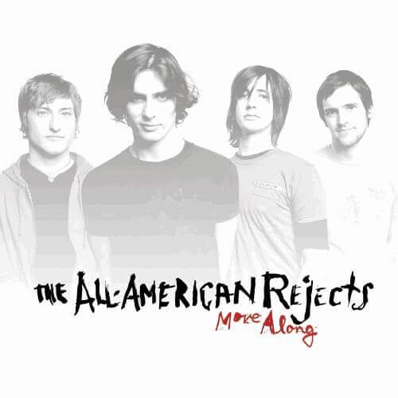
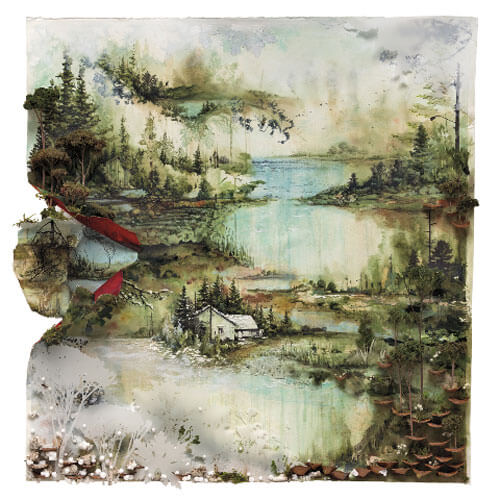
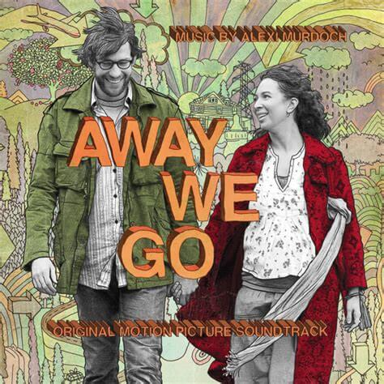
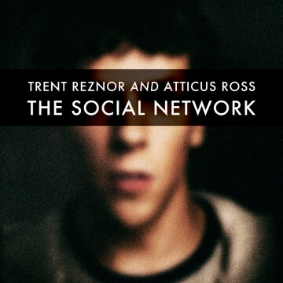
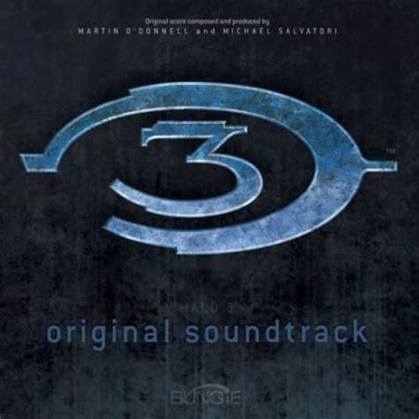
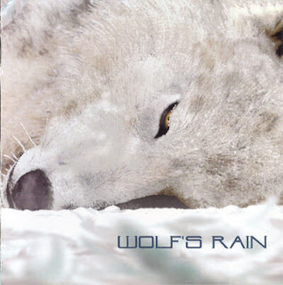

My Media Library
This is a multimedia library just like your local library probably is. You'll find my music collection here as well as my sparse movie selection. My CD collection is carefully curated and always digitized just in case, tho some of these I've managed to acquire digitally while I still hunt or wait to buy physical copies. I only own a handful of records (my partner's desire to collect has rubbed off on me a bit!) but I'll include them here eventually because they're neat. My movie collection is fairly small because I really only buy movies that I know I want to watch over again or that are really important to me, and the other few are ones I've recived as gifts from others (including my parents who just gutted their own DVD collection and sent a bunch of stuff my way).
artists & bands
 soundtracks & film scores
   movies